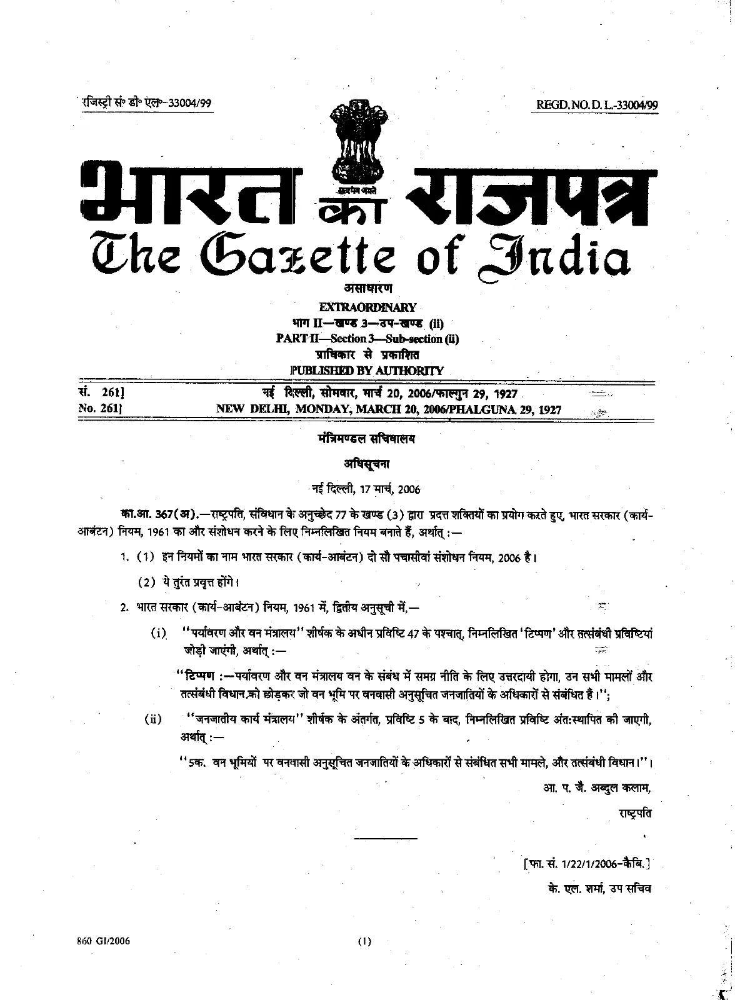
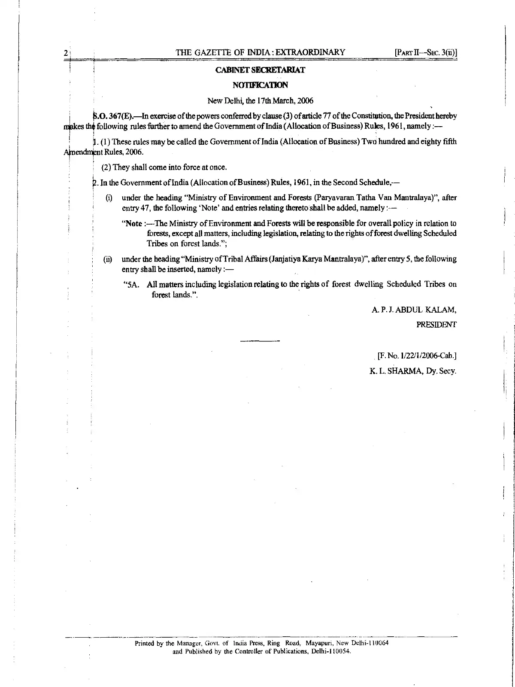

Amendment #285 (S.O. 367(E), 2006)
2 changes: 0 to the First Schedule, 2 to the Second Schedule. 2 applied
The order, page by page
Page 1 of 2

Page 2 of 2

12after Schedule 2 › Ministry of Environment and Forests › entry 47
- Note - The Ministry of Environment and Forests will be responsible for overall policy in relation to forests, except all matters, including legislation, relating to the rights of forest dwelling Scheduled Tribes on forest lands.
applied at schedule 2 › ministry MINISTRY OF ENVIRONMENT AND FORESTS › entry 47 in the Rules after #285
after Schedule 2 › Ministry of Tribal Affairs › entry 5
- 5A. All matters including legislation relating to the rights of forest dwelling Scheduled Tribes on forest lands.
applied at schedule 2 › ministry MINISTRY OF TRIBAL AFFAIRS › entry 5A in the Rules after #285
How this document was read
Edits to the reading
| Date | By | Edit | Before → after |
|---|---|---|---|
| 5 November 2026 | mukundesh | word corrected |
From the Government of India (Allocation of Business) Rules, 1961 and their amendments, as published by the Cabinet Secretariat (cabsec.gov.in), read by orgpedia. The readings of the older scanned gazettes have known gaps.